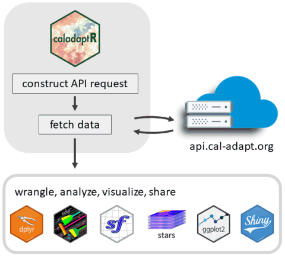

Cooking with Cal-Adapt Climate Data in R
April 2022
Chapter 1 Introduction
Cal-Adapt is a website and data portal for downscaled climate data for California and neighboring states in the western USA. Developed with support and guidance from CA state agencies, it is the go-to source for modeled climate data.

Coverage area for Cal-Adapt LOCA downscaled climate data
caladaptR is a R package that makes it easier to import climate data from Cal-Adapt into R using the Cal-Adapt API. As shown in the graphic below, caladaptR can import Cal-Adapt data as tables or rasters. After that, you can turn to other R packages to wrangle, analyze, and visualize the results.
 This Cookbook provides code examples for importing data via the Cal-Adapt API, and what you can do with the data once you get it into R. In addition to this Cookbook, readers may wish to check out the following package vignettes:
API Requests. Creating API requests.
Large Queries. Techniques for querying large volumes of data.
Rasters Part I: Download, Combine, Subset, and Compute Pixel Summaries. Basics of downloading rasters.
Rasters Part II: Six-Dimensional Climate Data Cubes and Spatial Queries. Indexing and slicing rasters by date, GCM, and scenario.
Rasters Part III: Downloading Rasters for Large Areas. Techniques for downloading large rasters.
Collaborators Wanted!
If you have R code that analyzes climate data, we’d love to help you share it! Create a pull request, GitHub issue, or just email us with the code you’d like to contribute.
1.2 Using Climate Data Wisely
There are wise and unwise uses of climate data. If you want to get the weather forecast for San Diego on July 4, 2085, we can show you how to do that (see Chapter xx). That would of course be an unwise use of modeled climate data.
To use climate data wisely and responsibly, you need to understand a little bit about how climate models work, what the forecasts do and do not represent, and follow some best practices. These topics are well beyond the scope of this Cookbook, but some general tips include:
When summarizing data from climate models, always examine time spans of 2-3 decades. By definition, climate is the range of weather variability over periods of 2-3 decades or more. That’s what the climate models have been designed to characterize, and they do it very well at this time scale. Using the API, you can drill down and get the yearly, monthly, or even daily data, and derive metrics at those scales (e.g., frost days). But those metrics are only meaningful if you aggregate at least 2 or 3 decades worth.
When looking at climate change, you generally should consider both the central tendency (i.e., trending up or down), as well as the range of variability. Both are important for most use cases.
The biggest source of uncertainty about future climate conditions is the amount of greenhouse gas emissions. Since no knows the future, it is prudent to consider both the medium and high emissions scenarios.
Cal-Adapt has both observed and modeled data for the historic period. The modeled data do a good job capturing the overall patterns of the observed record, but modeled data and observed data represent different things. They are apples and oranges, and you shouldn’t compare them directly. This means if your goal is to compare the past and the future, you need to summarize 20-30 years of model historic data, and compare that to a summary of 20-30 years of modeled future data.